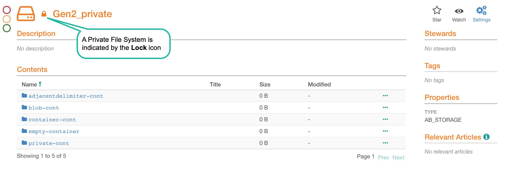
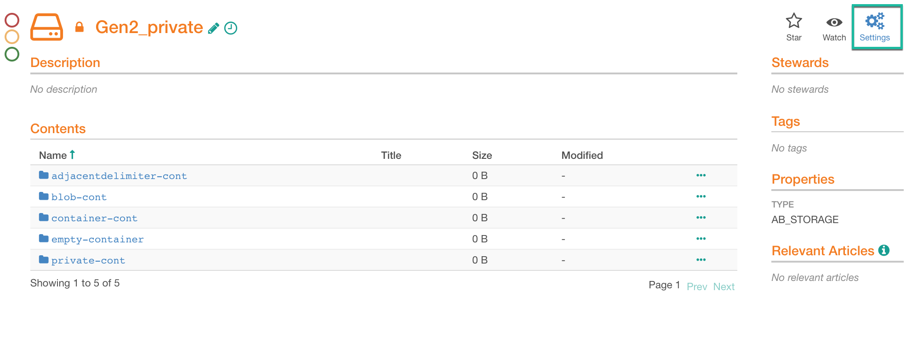
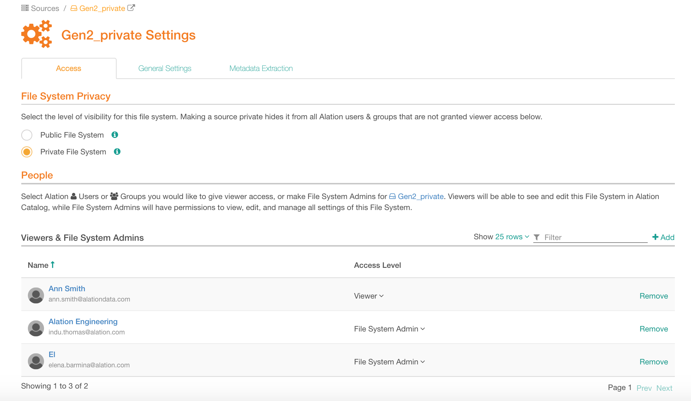
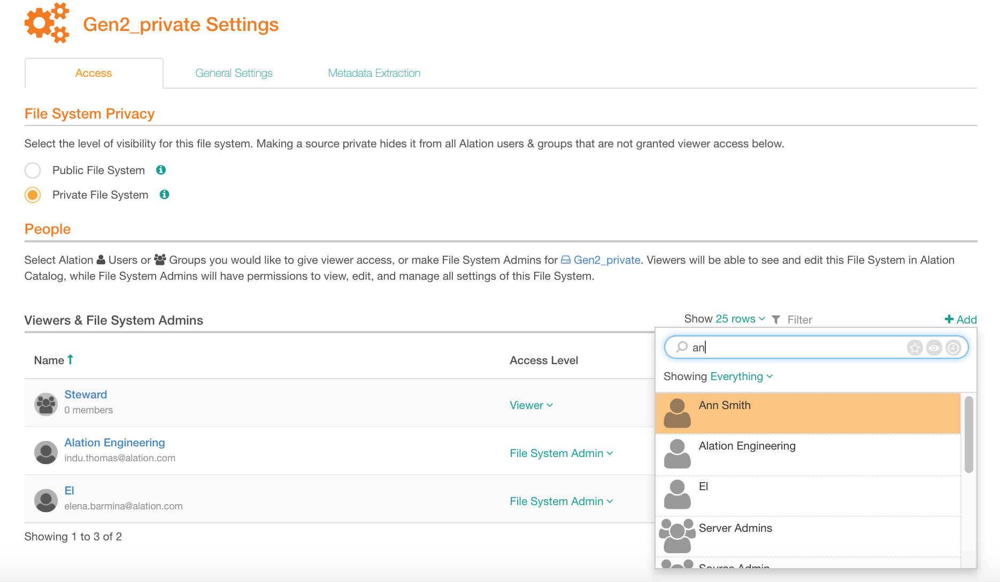
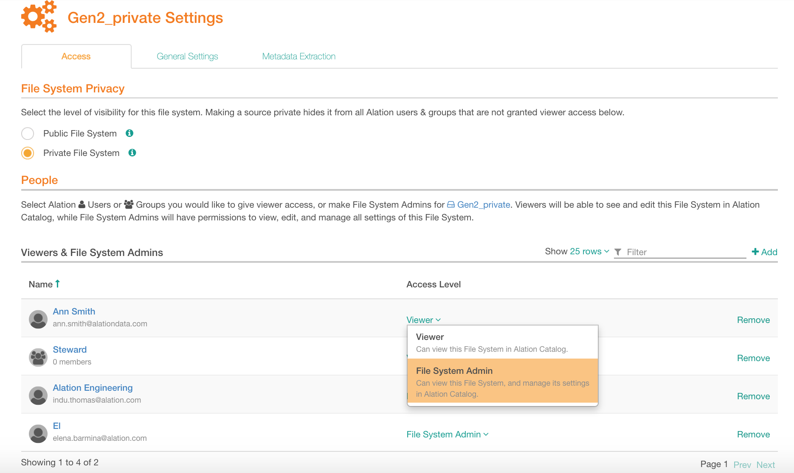
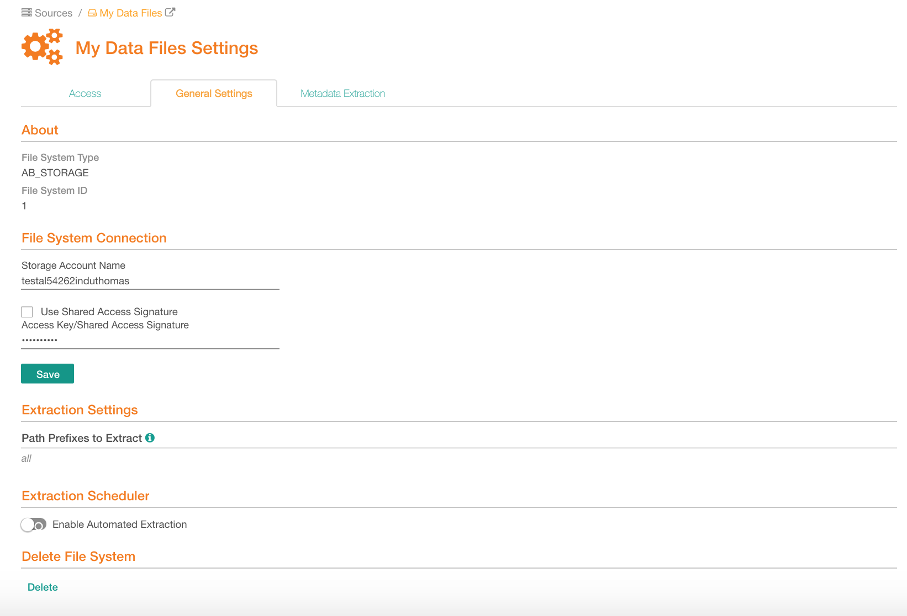
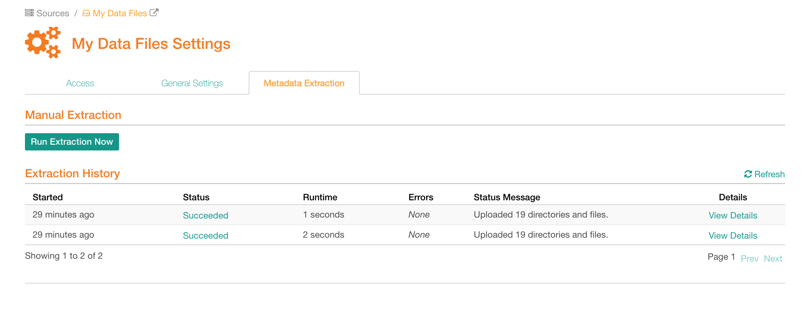

Access to File Systems¶
Applies from release V R7 (5.12.3)
Access to file system sources in the Catalog is controlled by the Privacy settings of each specific source. Similar to data sources, file systems can be Private or Public.
File system privacy is an Alation Catalog setting and does not mirror any permissions from the file system itself.
Private File Systems¶
Private file systems can only be accessed by users who are explicitly assigned as Viewers or File System Admins to this specific source. Only these allowed users can discover private file systems using Search or see them on the Sources page.
Viewers can view the Catalog pages of file system objects and the extracted metadata.
File System Admins can access and update the settings of a source.
Note
The Viewer access is not the same as the Viewer user role. The Viewer access to a source only gives permission to access this specific source and does not regulate access to parts of the Catalog or its functionality.
Public File Systems¶
Public file systems can be viewed by all Alation users. They can be discovered using Search or opened from the Sources page. The notion of a Viewer does not exist for a public file system as such sources are visible to all users by definition. The only type of access available for a public file system is File System Admin. A File System Admin can work with the settings of a file system source.
Configuring File System Privacy¶
An Alation admin who adds a file system source to Alation can set Privacy to Public or Private and give access to other users and groups assigning them as File System Admins or Viewers.
Only users assigned as File System Admins to a file system source can access its settings.
Users with the Server Admin role can give the File System Admin access to themselves.
From V R7 (5.12.x), if the Viewer role enforcement is enabled on your Alation instance, access to a file system settings will require the roles of the Server Admin or Source Admin. If it is disabled, a user with any role can be assigned as a File System Admin and access the settings page.
To set or change the privacy of a file system source:
Click the Settings icon on the file system source page to open its settings:
The settings page will open on the Access tab. Under File System Privacy, select either Public File System or Private File System:
To assign File System Admins and Viewers, under People, click +Add and in the Quick Search that opens, find and select the user or group to whom you want to give access:
The user or group you selected in the Quick Search will be added to the Viewers & File System Admins table under People. If your file system source is Private, further specify the access level by selecting Viewer or File System Admin. If it is Public, the access level is only File System Admin:

File System Access and Viewer Role Enforcement¶
From version V R7 (5.12.3), if the Viewer role is enabled on your instance, this will impact how users access the file system settings.
Viewer Role Enforced¶
Only admin users (Source, Server, and Catalog Admins) can function as File System Admins and access the settings of a file system source.
Note
The Quick Search does not filter users based on their role and users with non-admin roles are listed in the Quick Search results too. However, Viewers, Composers, and Stewards will not have access to settings even if they are assigned as File System Admins.
Viewer Role Not Enforced¶
Users with any role can be assigned as File System Admins and access the settings page.
File System Settings Page¶
Access¶
General Settings¶
File System Connection¶
In this section, provide the connection parameters for the file system source.
Extraction Settings¶
Specify the path prefixes for metadata extraction.
Extraction Scheduler¶
Enable automatic extraction and set a schedule.
Delete File System¶
Click Delete to delete the source from the Alation Catalog.

Metadata Extraction¶
Run Extraction Now¶
Click Run Extraction Now to manually perform a single extraction. Note that the paths for extraction are specified on the General Settings tab.
Extraction History¶
Job History table allows you to monitor the status of extraction and view the job details. Click the Status or the View Details link to open an information box for a specific extraction job.
